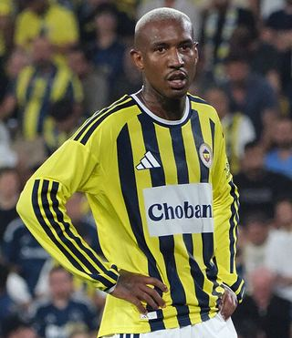

Ezzcoins › Player pages › Anderson Talisca

81
CAM

Anderson Talisca
PAC78
SHO83
PAS80
DRI81
DEF40
PHY73
Anderson Talisca
81 CAM · Fenerbahçe · Trendyol Süper Lig ·  Brazil
Brazil
No console price yet. Add this player to your watchlist on Ezzcoins: the most-watched players get a price every hour.
84Meta rating · ST +3 vs overall · CAM 83
PAC78
SHO83
PAS80
DRI81
DEF40
PHY73
Chemistry style
Turn on JavaScript to see this card with each chemistry style.
- Position
- CAM (also ST)
- Club
- Fenerbahçe
- League
- Trendyol Süper Lig
- Nation
- Brazil
- Skill moves
- 4★
- Weak foot
- 4★
- Preferred foot
- Left
- Full name
- Anderson Souza Conceição
Meta rating: Ezzcoins' own estimate of how well this card plays in game, worked out from its stats for each position it can play, its skill moves, weak foot and PlayStyle+. An average card scores about its overall rating; higher means it plays above its rating.
Watch on EzzcoinsMore from Fenerbahçe
- 83
 Mason GreenwoodRM
Mason GreenwoodRM - 83
 N'Golo KantéCDM
N'Golo KantéCDM - 82EdersonGK
- 82
 Marco AsensioCAM
Marco AsensioCAM - 82
 Romelu LukakuST
Romelu LukakuST - 81Mattéo GuendouziCDM
- 81
 Milan ŠkriniarCB
Milan ŠkriniarCB - 81
 Vedat MuriqiST
Vedat MuriqiST